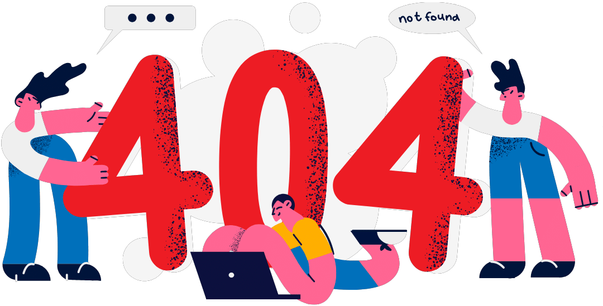

{% extends 'base.html' %}

{% block content %}
<div class="container mx-auto">
    <section class="items-center justify-center h-screen mx-10 text-center relative">
        <div class="absolute top-1/2 left-1/2 translate-x-[-50%] translate-y-[-50%]">
            {% load static %}
            
            <p class="mb-10 font-raleway text-prim-yellow font-bold text-xl">Maaf, halaman yang Anda cari tidak memberikan akses untuk analisis mendalam.</p>
            <a href="/" class="px-3 py-2 bg-prim-purple text-white rounded-lg mt-6 font-raleway text-sm">Back to Home</a>
        </div>
    </section>
</div>
{% endblock %}